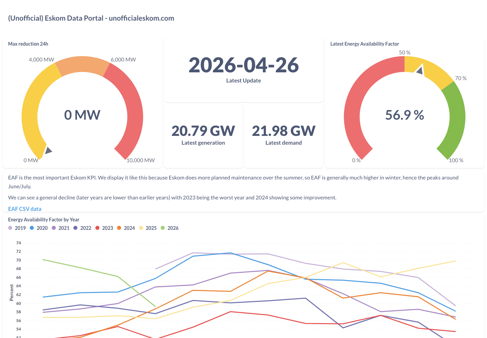
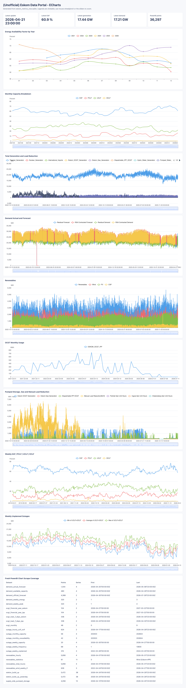
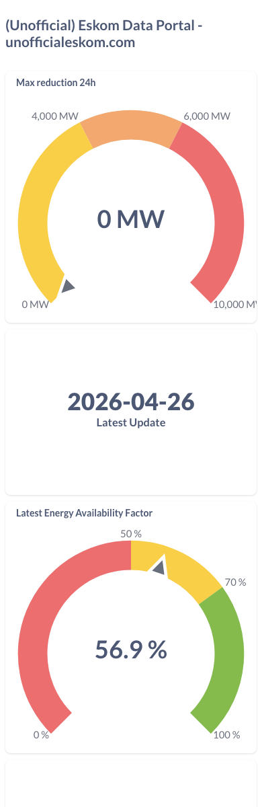
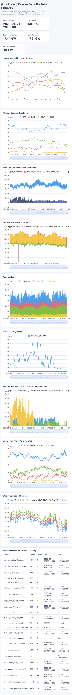

The old site was a wall of embedded Metabase dashboards — slow, awkward on phones, and unreadable at a glance.

The whole grid, rendered with ECharts — pan, zoom, hover. Loads instantly, refreshes hourly.


